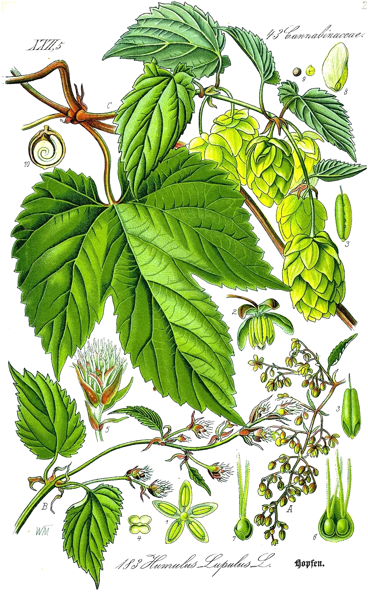

After the hop plant, Humulus lupulus. One large ring of eleven carbons. It has the same formula as caryophyllene; opening caryophyllene’s small ring gives humulene’s outline.
- Scent
- woody, dry, herbal, hop-like
- Found in
- hops, sage, ginger, cloves, basil, black pepper.
- In our honeys
- Sunshine Soothing Berry Grounding Rest as a flavouring ingredient; amount not published
- In food
- No evaluation by JECFA, the FAO/WHO expert committee on food additives, is listed in PubChem.
- Molar mass
- 204.35 g/mol
- Boiling point
- 99–100 °C at 3 mm Hg HMDB
- CAS number
- 6753-98-6
- FEMA number
- none listed in PubChem
- Record
- PubChem 5281520
- Systematic name
- (1E,4E,8E)-2,6,6,9-tetramethylcycloundeca-1,4,8-triene
What has been studied So far: animals
- ReviewA 2024 scoping review covered 340 papers. It found consistent anti-inflammatory effects in rodents and effects on tumour cells in dishes, and no clinical study of isolated humulene.5
- Not knownEverything in people.